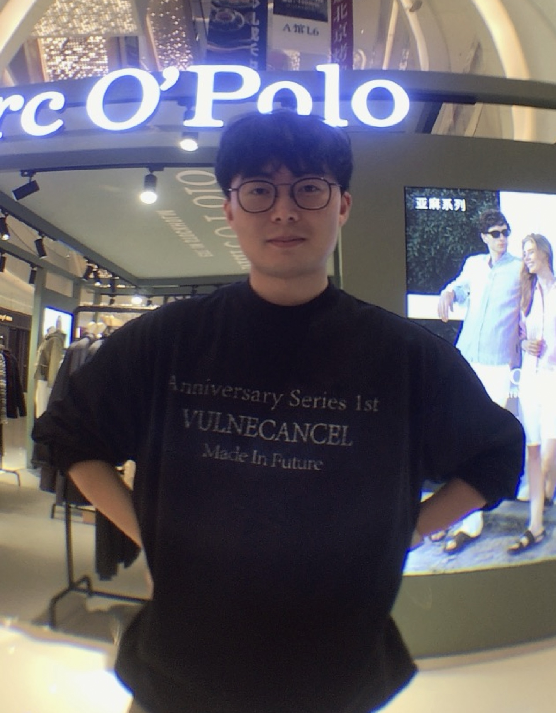

词曲创作与 Demo 制作
成熟的高频创作习惯，曾保持每天一首的产出节奏；擅长 Ableton、FL Studio、Cubase，有自己的插件库与录音设备，可独立完成 Beat、录制 demo 与基础混音。
从词曲动机、Demo 制作到发行统筹与版权合规——做过录音棚音频编辑，也在平台侧判断过词曲抄袭风险。既懂创作本身，也懂一首歌进入市场之前要过的每一关。

创作端、制作端、商务端和平台端我都待过。这让我写歌时会考虑市场，做企划时会尊重作品。
成熟的高频创作习惯，曾保持每天一首的产出节奏；擅长 Ableton、FL Studio、Cubase，有自己的插件库与录音设备，可独立完成 Beat、录制 demo 与基础混音。
搭建收歌渠道、采买与曲库分级管理，跟进词曲转让、合同发票与艺人匹配试音；统筹歌曲发行全流程，负责封面、歌词、文案企划等上线物料。
在平台侧跟进音乐侵权与维权处理，依据词曲抄袭鉴定策略评估原创内容合规风险，并对权利材料、授权文件做权属研判。
每周反推爆款作品，定位数据起量的节点与原因并组织复盘；了解歌曲在流媒体、短视频平台的推广逻辑，能较快反推出策划方向。
会剪视频、制作歌曲海报与封面，具备文案撰写能力；有音乐标注经验，熟悉各类音乐风格特点，可支撑内容分类与曲库管理。
以下为原创词曲代表作品，均为本人作词 / 作曲方向创作。点击左侧任意一首即可试听，右侧可同步阅读完整歌词与创作企划。
音频文件随站点本地打包，可直接试听；歌词按段落标注（A / B / C / Verse / Chorus / Bridge / Rap），便于快速判断结构。
以下词曲作品已由合作歌手演唱并在 QQ 音乐正式发行。从动机到成品、从企划到上线，一首歌该走的路，都替它走完了。
除词曲与音频制作外，我也独立完成歌曲 DEMO 视觉：从概念、封面到动态影像与字幕节奏。以下为三支竖屏概念影像。
黑白线稿 × 荧光绿手写，时间循环与十二宫格构成的失重感。歌词字幕随画面呼吸推进。
蓝白雪景与手写标题，用持续的落雪和缓慢浮现的歌词，把「告别」留在最后一帧之前。
黑白撕纸边框与胶片颗粒，把月牙嵌进眼睛的虹膜。歌词以带描边的字幕逐句落下，像在旧相纸上显影。
音频编辑起步，中间是密集的词曲创作与音乐商务，如今在平台侧做版权与内容合规。每一段都在补上同一张拼图的不同边。
临沂大学 本科 · 音乐学 · 2020—2024
主修方向涵盖音乐制作、钢琴、声乐、中西方音乐史、世界民族音乐、曲式分析、和声学、音乐美学、教育学与心理学。
目前求职意向为音频编辑，期望城市成都。如果你的团队需要一位既会写歌、又懂制作与发行流程的人，欢迎随时联系。